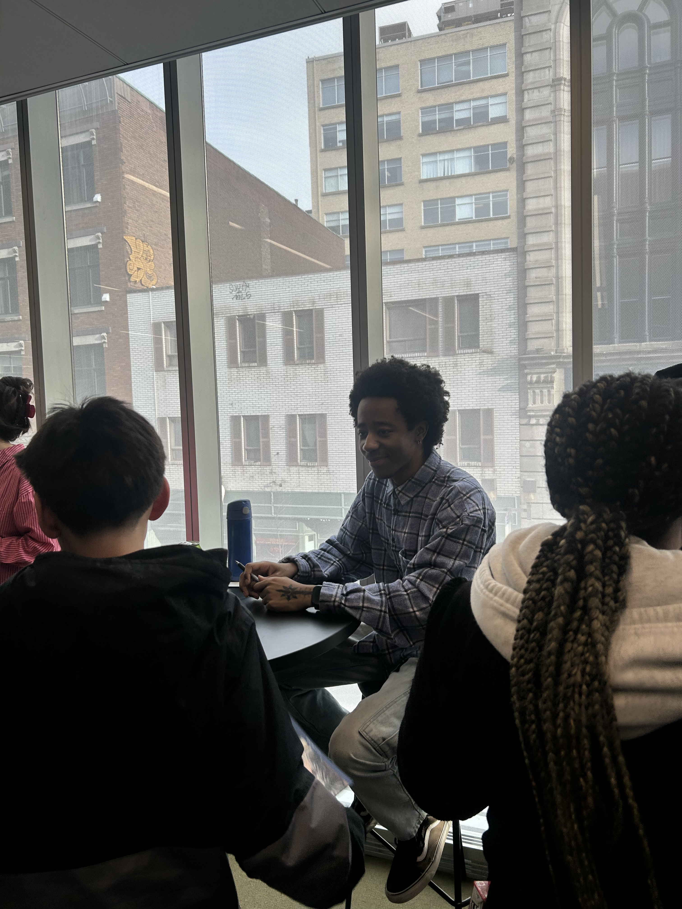
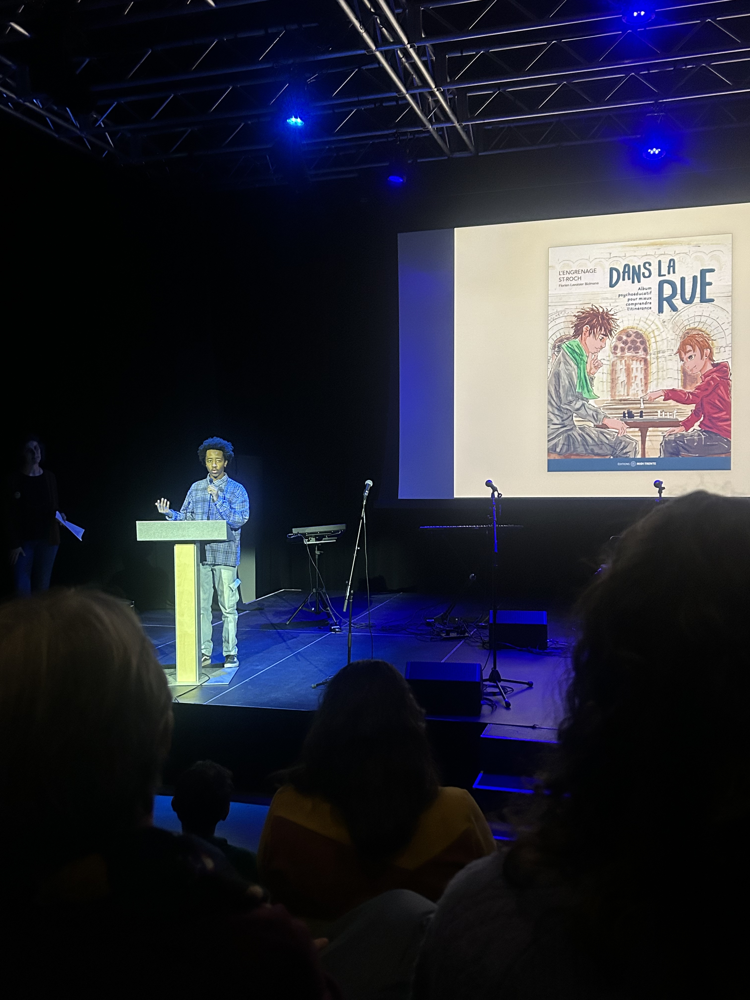

Album jeunesse · L'Engrenage Saint-Roch x Midi trente · 2026
Ce projet rappelle que les personnes en situation d'itinerance sont des humains avant tout.Florien Lavoisier Bizimana - Illustrateur
Le projet
Un comite citoyen, des enseignants, des travailleurs de rue, des personnes touchees par l'itinerance et les enfants eux-memes ont faconne ce livre de bout en bout.
Dans les medias
Soutien politique
Quand je vois quelqu'un dans la rue, ca me fait sentir que j'ai de la chance parce que, moi, j'ai une maison, j'ai des parents qui m'aiment, j'ai de la nourriture.Lou Warnke Lake - eleve, ecole des Berges
Lancement · Bibliotheque Gabrielle-Roy


Un outil pour parents, enseignants et intervenants - et un cadeau pour les enfants qui cherchent des mots.